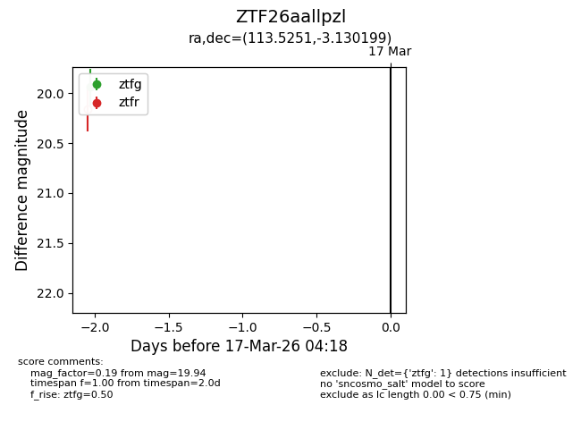
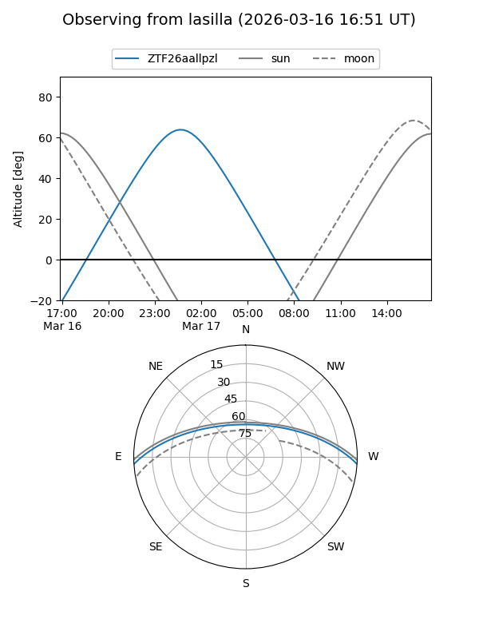
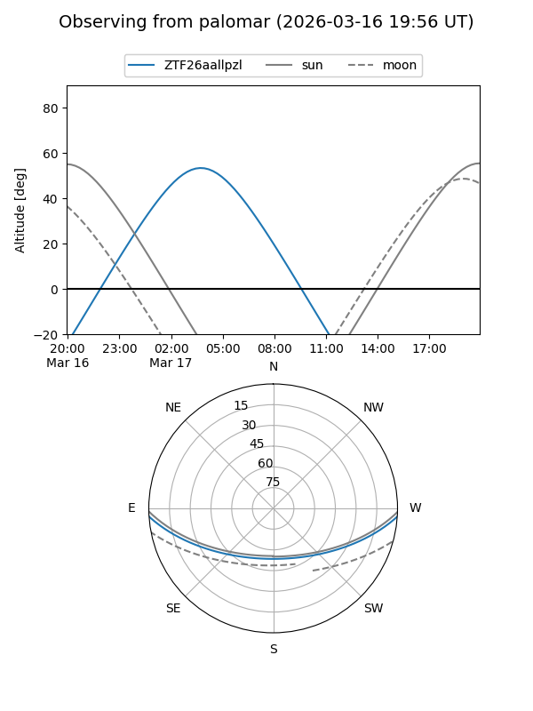

ZTF26aallpzl
Target ZTF26aallpzl at 2026-03-17 04:20
Aliases and brokers:
FINK: link
Lasair: link
ALeRCE: link
alt names
ZTF26aallpzl (ztf,fink_ztf)
Coordinates:
equatorial (ra, dec) = 113.5251,-3.13020
equatorial (HMS+DMS) = 07:34:06.01,-03:07:48.72
galactic (l, b) = (220.6430,+8.02302)
Flags:
Photometry:
last ztfg=19.94
1 ztfg detections
Lightcurve

Visibility


Additional plots